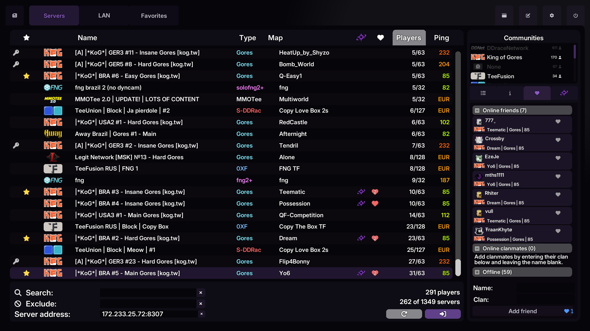

DDNet, with
more options.
Choose your input prediction, arrange the HUD and check your KoG stats.
Built on DDNet and TClient.

What's in
the client.
Screenshots of the menus and features.
Search or filter to find what you need.
9 features to explore
No features match your search.
Try the
HUD layout.
Drag the panels and toggle what you want to see.
This demo saves your layout in the browser.
Choose what to show
Show or hide each panel
and adjust its size.
This preview does not change your client.
Set up your HUD in Nova settings.
Input prediction
options.
Choose from Tater, Best, Saiko, Delta, F, Cloud, Meow, Ancient, Next, Snow and Salatik.
Tater — adjust the prediction amount and whether it applies to other players in Nova settings.
Other features: a server browser, friends list, Twitch messages in chat, hook and interpolation settings, and AntiPing smoothing.
Attempts, history
and finishes.
Check how many times you've tried a map, review your server history, or save a card when you finish.
Per-server visits, saves, lasts, deaths and online time.
Download
NovaClient.
For Windows x64.
Download the ZIP and extract it before playing.
How to install
Download the client.Get the Windows x64 package.
Extract the whole folder.Keep the DLLs and data beside the executable.
Open DDNet.exe.Choose a server and play.
Recent releases
Release history ↗Checking GitHub for the latest download…